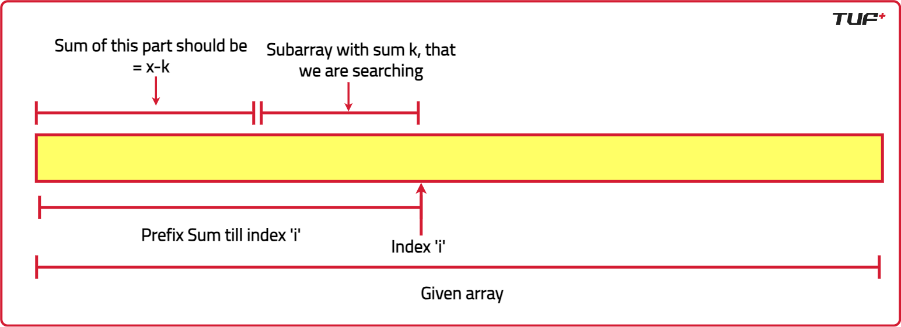

Array and Hashing [Top G]
DSA Quick Revision
2 Sum: Check if a pair with given sum exists in Array
class Solution { //DSAConceptRevision // Main function public int[] twoSum(int[] nums, int target) { // Step 1: Store value and index pairs List<int[]> list = new ArrayList<>(); int n = nums.length; for(int i = 0; i < n; i++) { list.add(new int[]{nums[i], i}); // [value, index] } // Step 2: Sort by value Collections.sort(list, (a, b) -> a[0] - b[0]); // Step 3: Two pointers to find the pair int i = 0, j = n - 1; while(i < j) { int sum = list.get(i)[0] + list.get(j)[0]; if(sum > target) j--; // Too high, move right pointer left else if(sum < target) i++; // Too low, move left pointer right else { // Found! Return original indices return new int[]{list.get(i)[1], list.get(j)[1]}; } } // No solution found (should not reach for valid input) return new int[]{}; } }class Solution { public int[] twoSum(int[] nums, int target) { // Step 1: Create a map to store value -> index Map<Integer, Integer> map = new HashMap<>(); // Step 2: Traverse array for(int i = 0; i < nums.length; i++) { int complement = target - nums[i]; // Step 3: Check if complement already exists if(map.containsKey(complement)) { // Found the pair, return indices return new int[]{map.get(complement), i}; } // Step 4: Store value and its index map.put(nums[i], i); } // No solution found return new int[]{}; } }
Merge Intervals
class Solution { public int[][] merge(int[][] intervals) { // Step 1: Sort intervals by start time to simplify overlap detection Arrays.sort(intervals, (a, b) -> a[0] - b[0]); List<int[]> list = new ArrayList<>(); for (int i = 0; i < intervals.length; i++) { int[] curr = intervals[i]; // If list is empty OR no overlap with last interval, simply add if (list.isEmpty() || list.get(list.size() - 1)[1] < curr[0]) { list.add(curr); } else { // Overlap case: merge current with last by updating end time list.get(list.size() - 1)[1] = Math.max(list.get(list.size() - 1)[1], curr[1]); } } // Convert list to array and return int[][] ans = new int[list.size()][2]; for (int i = 0; i < ans.length; i++) { ans[i] = list.get(i); } return ans; } }
3 Sum : Find triplets that add up to a zero
class Solution { //DSAQuickRevision // Function to find triplets having sum equals to target public List<List<Integer>> threeSum(int[] nums) { // List to store the triplets that sum up to target List<List<Integer>> ans = new ArrayList<>(); int n = nums.length; // Sort the input array nums Arrays.sort(nums); // Iterate through the array to find triplets for (int i = 0; i < n; i++) { // Skip duplicates if (i > 0 && nums[i] == nums[i - 1]) continue; // Two pointers approach int j = i + 1; int k = n - 1; while (j < k) { int sum = nums[i] + nums[j] + nums[k]; if (sum < 0) { j++; } else if (sum > 0) { k--; } else { // Found a triplet that sums up to target List<Integer> temp = new ArrayList<>(); temp.add(nums[i]); temp.add(nums[j]); temp.add(nums[k]); ans.add(temp); // Skip duplicates j++; k--; while (j < k && nums[j] == nums[j - 1]) j++; while (j < k && nums[k] == nums[k + 1]) k--; } } } return ans; } }
Kadane’s Algorithm : Maximum Subarray Sum in an Array
class Solution { //DSAQuickRevision public int maxSubArray(int[] arr) { //Kadane's Algorithm int n = arr.length; int maxi = Integer.MIN_VALUE; // Initialize the maximum subarray sum to a very small value int sum = 0; // Initialize the current sum of the subarray for (int i = 0; i < n; i++) { sum += arr[i]; // Add the current element to the current sum if (sum > maxi) { //Isko sum < 0 wali condition ke pehle likhna. maxi = sum; // Update the maximum subarray sum if the current sum is greater } // If the current sum is negative, reset it to 0 if (sum < 0) { sum = 0; } } return maxi; // Return the maximum subarray sum } }class Solution { //Follow Up: Print the Answer Subarray Also. public int maxSubArray(int[] arr) { int n = arr.length; int maxi = Integer.MIN_VALUE; int sum = 0; int start = 0; int ansStart = -1, ansEnd = -1; for (int i = 0; i < n; i++) { if (sum == 0) start = i; // Starting index. sum += arr[i]; if (sum > maxi) { maxi = sum; ansStart = start; ansEnd = i; } // If sum < 0: discard the sum calculated if (sum < 0) { sum = 0; } } //printing the subarray: System.out.print("The subarray is: ["); for (int i = ansStart; i <= ansEnd; i++) { System.out.print(arr[i] + " "); } System.out.print("]"); return maxi; } }
Merge two sorted arrays without extra space
class Solution{ //DSAConceptRevision // Function to merge two sorted arrays nums1 and nums2 public void merge(int[] nums1, int m, int[] nums2, int n) { // Pointer for nums1 (end of valid elements) int left = m - 1; // Pointer for nums2 (beginning of valid elements) int right = 0; /* Swap the elements until nums1[left] is smaller than nums2[right]*/ while (left >= 0 && right < n) { if (nums1[left] > nums2[right]) { int temp = nums1[left]; nums1[left] = nums2[right]; nums2[right] = temp; left--; right++; } //break out of loop if nums1[left] > nums2[right] else break; } // Sort nums1 from index 0 to m-1 Arrays.sort(nums1, 0, m); // Sort nums2 from start to end Arrays.sort(nums2); // Put the elements of nums2 in nums1 for (int i = m; i < m + n; i++) { nums1[i] = nums2[i - m]; } } }
Spiral Matrix
class Solution { //DSAConceptRevision //Function to print matrix in spiral manner public List<Integer> spiralOrder(int[][] matrix) { List<Integer> ans = new ArrayList<>(); // Number of rows int n = matrix.length; // Number of columns int m = matrix[0].length; // Initialize pointers for traversal int top = 0, left = 0; int bottom = n - 1, right = m - 1; // Traverse the matrix in spiral order while (top <= bottom && left <= right) { // Traverse from left to right for (int i = left; i <= right; ++i) { ans.add(matrix[top][i]); } top++; // Traverse from top to bottom for (int i = top; i <= bottom; ++i) { ans.add(matrix[i][right]); } right--; // Traverse from right to left if (top <= bottom) { for (int i = right; i >= left; --i) { ans.add(matrix[bottom][i]); } bottom--; } // Traverse from bottom to top if (left <= right) { for (int i = bottom; i >= top; --i) { ans.add(matrix[i][left]); } left++; } } //Return the ans return ans; } }
Insert Delete GetRandom O(1)
import java.util.*; class RandomizedSet { List<Integer> list; Map<Integer, Integer> map; Random rand; public RandomizedSet() { list = new ArrayList<>(); map = new HashMap<>(); rand = new Random(); } public boolean insert(int val) { if (map.containsKey(val)) return false; list.add(val); // Add to end of list map.put(val, list.size() - 1); // Map value to index return true; } public boolean remove(int val) { if (!map.containsKey(val)) return false; int index = map.get(val); // index of val in list int lastElement = list.get(list.size() - 1); // last element // Swap val with last element list.set(index, lastElement); map.put(lastElement, index); // Remove last element list.remove(list.size() - 1); map.remove(val); return true; } public int getRandom() { int randomIndex = rand.nextInt(list.size()); return list.get(randomIndex); } }
Product of Array Except Self
class Solution { public int[] productExceptSelf(int[] nums) { int n = nums.length; int[] res = new int[n]; // Step 1: Prefix product — res[i] = product of all elements before i res[0] = 1; // Nothing on the left of index 0 for (int i = 1; i < n; i++) { res[i] = res[i - 1] * nums[i - 1]; } // Step 2: Suffix product — multiply from the right int suffix = 1; // Nothing on the right of last element for (int i = n - 1; i >= 0; i--) { res[i] *= suffix; suffix *= nums[i]; } return res; } }
First Missing Positive
class Solution { public int firstMissingPositive(int[] nums) { int n = nums.length; // Step 1: Place each number at its correct index (i.e., nums[i] → index nums[i] - 1) for (int i = 0; i < n; i++) { while ( nums[i] > 0 && nums[i] <= n && nums[nums[i] - 1] != nums[i] ) { // Swap nums[i] with nums[nums[i] - 1] int correctIndex = nums[i] - 1; int temp = nums[i]; nums[i] = nums[correctIndex]; nums[correctIndex] = temp; } } // Step 2: Find the first index where nums[i] != i + 1 for (int i = 0; i < n; i++) { if (nums[i] != i + 1) return i + 1; } // All positions filled correctly, so answer is n + 1 return n + 1; } }
Longest Consecutive Sequence
class Solution { //DSAConceptRevision public int longestConsecutive(int[] nums) { if (nums.length == 0) return 0; HashSet<Integer> hs = new HashSet<>(); for (int num : nums) hs.add(num); int longest = 1; for (int num : nums) { // check if the num is the start of a sequence by checking if left exists if (!hs.contains(num - 1)) { // start of a sequence int count = 1; while (hs.contains(num + 1)) { // check if hs contains next no. num++; count++; } longest = Math.max(longest, count); } } return longest; } }
Move Zeros to End
class Solution { //DSAStriver //GFG160 public void moveZeroes(int[] nums) { int j = 0; // Initialize j to 0 for (int i = 0; i < nums.length; i++) { if (nums[i] != 0) { nums[j++] = nums[i]; } } // Fill the remaining elements with zeros while (j < nums.length) { nums[j++] = 0; } } }
Rotate matrix by 90 degrees
class Solution { //DSAConceptRevision public void rotateMatrix(int[][] matrix) { int n = matrix.length; // Step 1: Swap elements along the main diagonal. for (int i = 0; i < n; i++) { for (int j = i; j < n; j++) { //Imp: why not j = 0 int temp = matrix[i][j]; matrix[i][j] = matrix[j][i]; matrix[j][i] = temp; } } // Step 2: Reverse each row. for (int[] row : matrix) { reverse(row); } } private void reverse(int[] arr) { int left = 0; int right = arr.length - 1; while (left < right) { int temp = arr[left]; arr[left] = arr[right]; arr[right] = temp; left++; right--; } } }
Count Subarrays with given sum [Negative Values also Present]
public class Solution { public int subarraySum(int[] nums, int k) { int count = 0; int prefixSum = 0; // Map to store frequency of prefix sums Map<Integer, Integer> sumFreq = new HashMap<>(); sumFreq.put(0, 1); // Base case: one subarray with sum = 0 for (int num : nums) { prefixSum += num; // Check if there's a prefix sum that makes the current sum - k if (sumFreq.containsKey(prefixSum - k)) { count += sumFreq.get(prefixSum - k); } // Update the frequency map sumFreq.put(prefixSum, sumFreq.getOrDefault(prefixSum, 0) + 1); } return count; } }
{kind=link}
Next Permutation
class Solution { //DSAStriver // Function to get the next permutation of given array public void nextPermutation(int[] nums) { int n = nums.length; // Size of the given array // To store the index of the first smaller element from right int ind = -1; // Find the first index from the end where nums[i] < nums[i+1] for(int i = n - 2; i >= 0; i--) { if(nums[i] < nums[i + 1]) { ind = i; break; } } /* If no such index exists, array is in descending order So, reverse it to get the smallest permutation */ if(ind == -1) { reverse(nums, 0, n - 1); return; } // Find the element just greater than nums[ind] from the end for(int i = n - 1; i > ind; i--) { if(nums[i] > nums[ind]) { swap(nums, i, ind); // Swap with nums[ind] break; } } // Reverse the right half to get the next smallest permutation reverse(nums, ind + 1, n - 1); return; } // Helper Function to swap two numbers in an array private void swap(int[] nums, int i, int j) { int temp = nums[i]; nums[i] = nums[j]; nums[j] = temp; } // Helper function to reverse the array private void reverse(int[] nums, int start, int end) { while(start < end) { swap(nums, start, end); start++; end--; } } }
Sort an array of 0's 1's and 2's

This algorithm contains 3 pointers i.e. low, mid, and high, and 3 main rules.
- Index 0 to low -1 contains 0
- Index low to mid - 1 contains 1
- mid to high —> unsorted.
- Index high +1 to sizeOfArray - 1 contains 2.
class Solution { //DSAQuickRevision public void sortZeroOneTwo(int[] nums) { // Dutch national flag algorithm int mid = 0; int low = 0; int high = nums.length - 1; while (mid <= high) { // don't froget the equal sign. it is important. if (nums[mid] == 0) swap(nums, low++, mid++); // swap low and mid and do low++ and mid++ else if (nums[mid] == 1) mid++; // just do mid++ else if (nums[mid] == 2) swap(nums, mid, high--); // swap mid and high and do high-- Note : only high-- } } public static void swap(int[] a, int i, int j) { int temp = a[i]; a[i] = a[j]; a[j] = temp; } }
Valid Sudoku
class Solution { public boolean isValidSudoku(char[][] board) { // 9 rows, 9 cols, 9 boxes HashSet<Character>[] rows = new HashSet[9]; HashSet<Character>[] cols = new HashSet[9]; HashSet<Character>[] boxes = new HashSet[9]; // initialize sets for (int i = 0; i < 9; i++) { rows[i] = new HashSet<>(); cols[i] = new HashSet<>(); boxes[i] = new HashSet<>(); } // traverse board for (int i = 0; i < 9; i++) { for (int j = 0; j < 9; j++) { char c = board[i][j]; if (c == '.') continue; // skip empty cells int boxIndex = (i / 3) * 3 + (j / 3); // box number (0-8) // if duplicate found in row, col, or box → invalid if (rows[i].contains(c) || cols[j].contains(c) || boxes[boxIndex].contains(c)) { return false; } // otherwise add to sets rows[i].add(c); cols[j].add(c); boxes[boxIndex].add(c); } } return true; // sab valid hai } }
Left/Right Rotate Array by K Places
class Solution { //DSAStriver // Function to rotate the array to the left by k positions public void rotate(int[] nums, int k) { int n = nums.length; // Size of array k = k % n; // To avoid unnecessary rotations k = n - k; // Imp: for right rotate replace k with n - k // Reverse the first k elements reverseArray(nums, 0, k - 1); // Reverse the last n-k elements reverseArray(nums, k, n - 1); // Reverse the entire array reverseArray(nums, 0, n - 1); } // Function to reverse the array between start and end private void reverseArray(int[] nums, int start, int end) { while (start < end) { int temp = nums[start]; nums[start] = nums[end]; nums[end] = temp; start++; end--; } } }
Majority Element 1
class Solution { //DSAConceptRevision public int majorityElement(int[] nums) { //Moore’s Voting Algorithm // Get the size of the given array. int n = nums.length; int cnt = 0; // Initialize a counter for the majority element. int el = 0; // Initialize a variable to store the majority element. // Applying the Boyer-Moore majority vote algorithm: for (int i = 0; i < n; i++) { if (cnt == 0) { // If the counter is zero, set the current element as the potential majority element. cnt = 1; el = nums[i]; } else if (el == nums[i]) { // If the current element matches the potential majority element, increment the counter. cnt++; } else { // If the current element is different, decrement the counter. cnt--; } } // Checking if the stored element is the majority element: int cnt1 = 0; for (int i = 0; i < n; i++) { if (nums[i] == el) { cnt1++; } } // If the potential majority element appears more than n/2 times, return it as the majority element. if (cnt1 > (n / 2)) { return el; } // If no majority element is found, return -1. return -1; } }
Remove duplicates from sorted array
class Solution { //DSAStriver // Function to remove duplicates from the array public int removeDuplicates(int[] nums) { // Edge case: if array is empty if (nums.length == 0) { return 0; } // Initialize pointer for unique elements int i = 0; // Iterate through the array for (int j = 1; j < nums.length; j++) { /*If current element is different from the previous unique element*/ if (nums[i] != nums[j]) { /* Move to the next position in the array for the unique element*/ i++; /* Update the current position with the unique element*/ nums[i] = nums[j]; } } // Return the number of unique elements return i + 1; } }
Reverse Integer
class Solution { public int reverse(int x) { int rev = 0; while (x != 0) { int digit = x % 10; // last digit nikalo x = x / 10; // x shrink karo // overflow check (32-bit range ke liye) if (rev > Integer.MAX_VALUE / 10 || (rev == Integer.MAX_VALUE / 10 && digit > 7)) { return 0; // overflow } if (rev < Integer.MIN_VALUE / 10 || (rev == Integer.MIN_VALUE / 10 && digit < -8)) { return 0; // underflow } rev = rev * 10 + digit; // digit add karo } return rev; } }🔍 Overflow Check (Positive side)
Suppose
revabhi 214748364 (yeMAX_VALUE / 10hai).- Agar next digit
7ya usse chhoti hai → safe.- Example:
214748364 * 10 + 7 = 2147483647✅ (still in range).
- Example:
- Agar next digit
8ho →2147483648ho jayega joMAX_VALUEse bada hai ❌.
Rule:
if rev > MAX/10 → overflow hoga if rev == MAX/10 && digit > 7 → overflow hoga🔍 Underflow Check (Negative side)
Suppose
revabhi -214748364 (yeMIN_VALUE / 10hai).- Agar next digit
8ya usse bada hai → safe.- Example:
214748364 * 10 + (-8) = -2147483648✅ (still in range).
- Example:
- Agar next digit
9ho →2147483649ho jayega joMIN_VALUEse chhota hai ❌.
Rule:
if rev < MIN/10 → underflow hoga if rev == MIN/10 && digit < -8 → underflow hoga- Agar next digit
Set Matrix Zeroes
Happy Number
4 Sum
class Solution{ //DSAConceptRevision public List<List<Integer>> fourSum(int[] nums, int target) { List<List<Integer>> ans = new ArrayList<>(); int n = nums.length; // Sort the input array nums Arrays.sort(nums); // Iterate through the array to find quadruplets for (int i = 0; i < n; i++) { // Skip duplicates for i if (i > 0 && nums[i] == nums[i - 1]) continue; for (int j = i + 1; j < n; j++) { // Skip duplicates for j if (j > i + 1 && nums[j] == nums[j - 1]) continue; // Two pointers approach int k = j + 1; int l = n - 1; while (k < l) { long sum = nums[i] + nums[j] + nums[k] + nums[l]; if (sum == target) { // Found a quadruplet that sums up to target List<Integer> temp = Arrays.asList(nums[i], nums[j], nums[k], nums[l]); ans.add(temp); // Skip duplicates for k and l k++; l--; while (k < l && nums[k] == nums[k - 1]) k++; while (k < l && nums[l] == nums[l + 1]) l--; } else if (sum < target) { k++; } else { l--; } } } } return ans; } }
Pascal's Triangle III
class Solution { //DSAConceptRevision public static List<List<Integer>> pascalTriangleIII(int n) { List<List<Integer>> ans = new ArrayList<>(); // Store the entire Pascal's triangle: for (int row = 1; row <= n; row++) { List<Integer> tempLst = new ArrayList<>(); // temporary list for (int col = 1; col <= row; col++) { tempLst.add(nCr(row - 1, col - 1)); } ans.add(tempLst); } return ans; } public static int nCr(int n, int r) { long res = 1; // calculating nCr: for (int i = 0; i < r; i++) { res = res * (n - i); res = res / (i + 1); } return (int) res; } }
Maximum Product Subarray in an Array
class Solution { //DSAQuickRevision public int maxProduct(int[] nums) { int n = nums.length; int ans = Integer.MIN_VALUE; // to store the answer // Indices to store the prefix and suffix multiplication int prefix = 1, suffix = 1; // Iterate on the elements of the given array for (int i = 0; i < n; i++) { /* Resetting the prefix and suffix multiplication if they turn out to be zero */ if (prefix == 0) prefix = 1; if (suffix == 0) suffix = 1; // update the prefix and suffix multiplication prefix *= nums[i]; suffix *= nums[n - i - 1]; // store the maximum as the answer ans = Math.max(ans, Math.max(prefix, suffix)); } // return the result return ans; } }
Contains Duplicate
Intersection of two sorted arrays
class Solution { //DSAStriver // Function to find intersection of two sorted arrays public int[] intersectionArray(int[] nums1, int[] nums2) { List<Integer> tempList = new ArrayList<>(); int i = 0, j = 0; // Traverse both arrays using two pointers approach while (i < nums1.length && j < nums2.length) { if (nums1[i] < nums2[j]) { i++; } else if (nums2[j] < nums1[i]) { j++; } // nums1[i] == nums2[j] else { tempList.add(nums1[i]); i++; j++; } } // Convert the list to an integer array int[] ans = new int[tempList.size()]; for (int k = 0; k < tempList.size(); k++) { ans[k] = tempList.get(k); } // Return the intersection of two arrays return ans; } }
Plus One
Insert Interval
class Solution { public ArrayList<int[]> insertInterval(int[][] intervals, int[] newInterval) { ArrayList<int[]> result = new ArrayList<>(); int i = 0; int n = intervals.length; // Step 1: Add all intervals ending before newInterval starts while (i < n && intervals[i][1] < newInterval[0]) { result.add(intervals[i]); i++; } // Step 2: Merge overlapping intervals while (i < n && intervals[i][0] <= newInterval[1]) { newInterval[0] = Math.min(newInterval[0], intervals[i][0]); newInterval[1] = Math.max(newInterval[1], intervals[i][1]); i++; } result.add(newInterval); // Step 3: Add remaining intervals while (i < n) { result.add(intervals[i]); i++; } return result; } }
Degree of an Array
Remove Duplicates from Sorted Array II
Squares of a Sorted Array
Design Tic-Tac-Toe
Remove Element
3Sum Closest
Max Points on a Line
Spiral Matrix II
Snapshot Array
Count Primes
Logger Rate Limiter
Find Pivot Index
Pairs of Songs With Total Durations Divisible by 60
Game of Life
Reaching Points
Maximize Distance to Closest Person
Insert Delete GetRandom O(1) - Duplicates allowed
Minimum Absolute Difference
Diagonal Traverse
Maximum Product of Three Numbers
Number of Divisible Triplet Sums
Simple Bank System
Number of Black Blocks
Rotating the Box
Interval List Intersections
Candy Crush
Range Sum Query 2D - Immutable
Design Memory Allocator
Sort Array by Increasing Frequency
Max Consecutive Ones
Summary Ranges
Minimum Area Rectangle
Minimum Operations to Write the Letter Y on a Grid
Design a Stack With Increment Operation
Ways to Make a Fair Array
Brightest Position on Street
Majority Element 2
class Solution { //DSAQuickRevision public List<Integer> majorityElementTwo(int[] nums) { int n = nums.length; // Get the size of the array int cnt1 = 0, cnt2 = 0; // Initialize counters for two potential majority elements. int el1 = Integer.MIN_VALUE; // Initialize the first potential majority element. int el2 = Integer.MIN_VALUE; // Initialize the second potential majority element. // Apply the Extended Boyer-Moore's Voting Algorithm: for (int i = 0; i < n; i++) { if (cnt1 == 0 && el2 != nums[i]) { cnt1 = 1; el1 = nums[i]; } else if (cnt2 == 0 && el1 != nums[i]) { cnt2 = 1; el2 = nums[i]; } else if (nums[i] == el1) { cnt1++; } else if (nums[i] == el2) { cnt2++; } else { cnt1--; cnt2--; } } List<Integer> result = new ArrayList<>(); // Create a list to store the majority elements. // Manually check if the stored elements in el1 and el2 are the majority elements: cnt1 = 0; cnt2 = 0; for (int i = 0; i < n; i++) { if (nums[i] == el1) { cnt1++; } if (nums[i] == el2) { cnt2++; } } int minCount = (int)(n / 3) + 1; // Determine the minimum count required for a majority element. // If el1 appears more than the minimum count, add it to the result list. if (cnt1 >= minCount) { result.add(el1); } // If el2 appears more than the minimum count, add it to the result list. if (cnt2 >= minCount) { result.add(el2); } return result; } }
Guess the Word
Dot Product of Two Sparse Vectors
Brightest Position on Street
Find the repeating and missing numbers
class Solution { //DSAQuickRevision // Function to find repeating and missing numbers public int[] findMissingRepeatingNumbers(int[] nums) { // Size of the array long n = nums.length; // Sum of first n natural numbers long SN = (n * (n + 1)) / 2; // Sum of squares of first n natural numbers long S2N = (n * (n + 1) * (2 * n + 1)) / 6; /* Calculate actual sum (S) and sum of squares (S2) of array elements */ long S = 0, S2 = 0; for (int i = 0; i < n; i++) { S += nums[i]; S2 += (long) nums[i] * (long) nums[i]; //Imp: don't remove this long } // Compute the difference values long val1 = S - SN; // S2 - S2n = X^2 - Y^2 long val2 = S2 - S2N; // Calculate X + Y using X + Y = (X^2 - Y^2) / (X - Y) val2 = val2 / val1; /* Calculate X and Y from X + Y and X - Y X = ((X + Y) + (X - Y)) / 2 Y = X - (X - Y) */ long x = (val1 + val2) / 2; long y = x - val1; // Return the results as [repeating, missing] return new int[]{(int) x, (int) y}; } }
Reverse Pairs
class Solution { //DSAQuickRevision static int reversePairs(int[] nums) { return mergeSort(nums, 0, nums.length - 1); } static int mergeSort(int[] nums, int low, int high) { if (low >= high) return 0; int mid = (low + high) / 2; int inv = mergeSort(nums, low, mid); inv += mergeSort(nums, mid + 1, high); inv += merge(nums, low, mid, high); return inv; } static int merge(int[] nums, int low, int mid, int high) { int cnt = 0; int j = mid + 1; for (int i = low; i <= mid; i++) { while (j <= high && nums[i] > (2 * (long) nums[j])) { j++; } cnt += (j - (mid + 1)); } ArrayList<Integer> temp = new ArrayList<>(); int left = low, right = mid + 1; while (left <= mid && right <= high) { if (nums[left] <= nums[right]) { temp.add(nums[left++]); } else { temp.add(nums[right++]); } } while (left <= mid) { temp.add(nums[left++]); } while (right <= high) { temp.add(nums[right++]); } for (int i = low; i <= high; i++) { nums[i] = temp.get(i - low); } return cnt; } }
Count the number of subarrays with given xor K

class Solution { //DSAQuickRevision public int subarraysWithXorK(int[] nums, int k) { int n = nums.length; int xr = 0; Map<Integer, Integer> mpp = new HashMap<>(); // setting the value of 0. mpp.put(xr, mpp.getOrDefault(xr, 0) + 1); int cnt = 0; for (int i = 0; i < n; i++) { // prefix XOR till index i: xr = xr ^ nums[i]; // By formula: x = xr ^ k: int x = xr ^ k; // add the occurrence of xr ^ k to the count: cnt += mpp.getOrDefault(x, 0); // Insert the prefix xor till index i into the map: mpp.put(xr, mpp.getOrDefault(xr, 0) + 1); } return cnt; } }
DSA Concept Revision
Merge Sort Algorithm
class Solution { //DSAConceptRevision public int[] mergeSort(int[] nums) { mergeSort(nums, 0, nums.length - 1); return nums; } void mergeSort(int[] arr, int low, int high) { if (low >= high) // Imp: don't forget that equal sign. return; int mid = (low + high) / 2; mergeSort(arr, low, mid); mergeSort(arr, mid + 1, high); merge(arr, low, mid, high); // Merge two sorted lists } void merge(int[] arr, int low, int mid, int high) { List<Integer> temp = new ArrayList<>(); // Using ArrayList instead of array int left = low; // starting index of left half int right = mid + 1; // starting index of right half // Merging both halves in sorted order while (left <= mid && right <= high) { if (arr[left] <= arr[right]) { temp.add(arr[left++]); // Imp: don't forget ++ } else { temp.add(arr[right++]); } } // If elements on the left half are still left while (left <= mid) { temp.add(arr[left++]); } // If elements on the right half are still left while (right <= high) { temp.add(arr[right++]); } // Copying merged elements back to the original array for (int i = low; i <= high; i++) { arr[i] = temp.get(i - low); // `i - low` is used to map `i` to `temp`'s index } } }
Quick Sort Algorithm

class Solution { // Partition the array and return pivot's correct index private int partition(int[] arr, int low, int high) { int pivot = arr[low]; // Choose first element as pivot (Hoare's partition) int i = low; int j = high; while (i < j) { // Move i forward until element > pivot while (i <= high - 1 && arr[i] <= pivot) i++; //Imp: place this = here only, else error. // Move j backward until element <= pivot while (j >= low + 1 && arr[j] > pivot) j--; // Swap out-of-place elements if (i < j) swap(arr, i, j); } // Place pivot in its correct sorted position swap(arr, low, j); return j; } // Recursive Quick Sort on subarrays private void quickSort(int[] arr, int low, int high) { if (low < high) { int pivotIndex = partition(arr, low, high); // Partition index quickSort(arr, low, pivotIndex - 1); // Sort left of pivot quickSort(arr, pivotIndex + 1, high); // Sort right of pivot } } // Swap utility for in-place sorting private void swap(int[] arr, int i, int j) { int temp = arr[i]; arr[i] = arr[j]; arr[j] = temp; } // Entry point to sort the array public int[] quickSort(int[] nums) { quickSort(nums, 0, nums.length - 1); return nums; } }
Count inversions in an array
class Solution { //DSAConceptRevision static int count; static int numberOfInversions(int arr[]) { count = 0; // Initilization is Imp, lol. mergeSort(arr, 0, arr.length - 1); return count; } public static void mergeSort(int[] arr, int low, int high) { if (low >= high) return; int mid = (low + high) / 2; mergeSort(arr, low, mid); mergeSort(arr, mid + 1, high); merge(arr, low, mid, high); } private static void merge(int[] arr, int low, int mid, int high) { List<Integer> temp = new ArrayList<>(); // ArrayList instead of array int left = low, right = mid + 1; while (left <= mid && right <= high) { if (arr[left] <= arr[right]) { temp.add(arr[left++]); } else { // Since we want left > right count only. temp.add(arr[right++]); // Count inversions: All remaining elements in left subarray are greater count += mid - left + 1; // Only one line, lol. } } // Copy remaining elements from left subarray while (left <= mid) { temp.add(arr[left++]); } // Copy remaining elements from right subarray while (right <= high) { temp.add(arr[right++]); } // Copy back to the original array for (int i = low; i <= high; i++) { arr[i] = temp.get(i - low); } } }
Longest subarray with sum K [Negative Values also Present]
class Solution { //DSAConceptRevision public int longestSubarray(int[] nums, int k) { int n = nums.length; Map<Integer, Integer> preSumMap = new HashMap<>(); int sum = 0; int maxLen = 0; for (int i = 0; i < n; i++) { // calculate the prefix sum till index i sum += nums[i]; // if the sum equals k, update maxLen if (sum == k) { maxLen = Math.max(maxLen, i + 1); } // calculate the sum of remaining part i.e., sum - k int rem = sum - k; // calculate the length and update maxLen if (preSumMap.containsKey(rem)) { int len = i - preSumMap.get(rem); maxLen = Math.max(maxLen, len); } // update the map if sum is not already present if (!preSumMap.containsKey(sum)) { preSumMap.put(sum, i); } } return maxLen; } }
DSA Striver
Left Rotate Array by One
class Solution { //DSAStriver public void rotateArrayByOne(int[] nums) { // Store the first element in a temporary variable int temp = nums[0]; // Shift elements to the left for (int i = 1; i < nums.length; i++) { nums[i - 1] = nums[i]; } // Place the first element at the end nums[nums.length - 1] = temp; } }
Union of two sorted arrays
class Solution { //DSAStriver public int[] unionArray(int[] nums1, int[] nums2) { List<Integer> UnionList = new ArrayList<>(); int i = 0, j = 0; int n = nums1.length; int m = nums2.length; while (i < n && j < m) { // Case 1 and 2 if (nums1[i] <= nums2[j]) { if (UnionList.isEmpty() || UnionList.get(UnionList.size() - 1) != nums1[i]) { UnionList.add(nums1[i]); } i++; } // Case 3 else { if (UnionList.isEmpty() || UnionList.get(UnionList.size() - 1) != nums2[j]) { UnionList.add(nums2[j]); } j++; } } // Add remaining elements of nums1, if any while (i < n) { if (UnionList.isEmpty() || UnionList.get(UnionList.size() - 1) != nums1[i]) { UnionList.add(nums1[i]); } i++; } // Add remaining elements of nums2, if any while (j < m) { if (UnionList.isEmpty() || UnionList.get(UnionList.size() - 1) != nums2[j]) { UnionList.add(nums2[j]); } j++; } // Convert List<Integer> to int[] int[] Union = new int[UnionList.size()]; for (int k = 0; k < UnionList.size(); k++) { Union[k] = UnionList.get(k); } return Union; } }
Rearrange array elements by sign
class Solution { //DSAStriver //Function to rearrange elements by their sign public int[] rearrangeArray(int[] nums) { int n = nums.length; // Initialize a result vector of size n int[] ans = new int[n]; /* Initialize indices for positive and negative elements*/ int posIndex = 0, negIndex = 1; // Traverse through each element in nums for (int i = 0; i < n; i++) { if (nums[i] < 0) { /* If current element is negative, place it at the next odd index in ans*/ ans[negIndex] = nums[i]; // Move to the next odd index negIndex += 2; } else { ans[posIndex] = nums[i]; // Move to the next even index posIndex += 2; } } // Return the rearranged array return ans; } }
Pascal's Triangle I
class Solution { //DSAStriver // Function to print the element in rth row and cth column public static int pascalTriangleI(int r, int c) { return nCr(r-1, c-1); } // Function to calculate nCr private static int nCr(int n, int r) { // Choose the smaller value for lesser iterations if(r > n-r) r = n-r; // base case if(r == 1) return n; int res = 1; // to store the result // Calculate nCr using iterative method avoiding overflow for (int i = 0; i < r; i++) { res = res * (n - i); res = res / (i + 1); } return res; // return the result } };
Pascal's Triangle II
class Solution { //DSAStriver // Function to return the rth row of Pascal's triangle public int[] pascalTriangleII(int r) { int[] ans = new int[r]; // to store the answer // Set the first element of the row as 1 ans[0] = 1; // Compute each element in the rth row for(int i = 1; i < r; i++) { ans[i] = (ans[i-1] * (r - i)) / i; } return ans; // return the result } }
Extras
| Link | Title | Frequency | Companies Count | Topics |
| https://leetcode.com/problems/best-time-to-buy-and-sell-stock | Best Time to Buy and Sell Stock | 100 | 120 | Array, Dynamic Programming |
| https://leetcode.com/problems/two-sum | Two Sum | 100 | 115 | Array, Hash Table |
| https://leetcode.com/problems/merge-intervals | Merge Intervals | 100 | 89 | Array, Sorting |
| https://leetcode.com/problems/number-of-islands | Number of Islands | 100 | 86 | Array, Depth-First Search, Breadth-First Search, Union Find, Matrix |
| https://leetcode.com/problems/trapping-rain-water | Trapping Rain Water | 100 | 81 | Array, Two Pointers, Dynamic Programming, Stack, Monotonic Stack |
| https://leetcode.com/problems/group-anagrams | Group Anagrams | 100 | 80 | Array, Hash Table, String, Sorting |
| https://leetcode.com/problems/3sum | 3Sum | 100 | 66 | Array, Two Pointers, Sorting |
| https://leetcode.com/problems/maximum-subarray | Maximum Subarray | 100 | 55 | Array, Divide and Conquer, Dynamic Programming |
| https://leetcode.com/problems/container-with-most-water | Container With Most Water | 100 | 52 | Array, Two Pointers, Greedy |
| https://leetcode.com/problems/search-in-rotated-sorted-array | Search in Rotated Sorted Array | 100 | 51 | Array, Binary Search |
| https://leetcode.com/problems/merge-sorted-array | Merge Sorted Array | 100 | 47 | Array, Two Pointers, Sorting |
| https://leetcode.com/problems/spiral-matrix | Spiral Matrix | 100 | 46 | Array, Matrix, Simulation |
| https://leetcode.com/problems/insert-delete-getrandom-o1 | Insert Delete GetRandom O(1) | 100 | 46 | Array, Hash Table, Math, Design, Randomized |
| https://leetcode.com/problems/top-k-frequent-elements | Top K Frequent Elements | 100 | 43 | Array, Hash Table, Divide and Conquer, Sorting, Heap (Priority Queue), Bucket Sort, Counting, Quickselect |
| https://leetcode.com/problems/product-of-array-except-self | Product of Array Except Self | 100 | 42 | Array, Prefix Sum |
| https://leetcode.com/problems/median-of-two-sorted-arrays | Median of Two Sorted Arrays | 100 | 42 | Array, Binary Search, Divide and Conquer |
| https://leetcode.com/problems/kth-largest-element-in-an-array | Kth Largest Element in an Array | 100 | 41 | Array, Divide and Conquer, Sorting, Heap (Priority Queue), Quickselect |
| https://leetcode.com/problems/meeting-rooms-ii | Meeting Rooms II | 100 | 41 | Array, Two Pointers, Greedy, Sorting, Heap (Priority Queue), Prefix Sum |
| https://leetcode.com/problems/first-missing-positive | First Missing Positive | 100 | 40 | Array, Hash Table |
| https://leetcode.com/problems/house-robber | House Robber | 100 | 37 | Array, Dynamic Programming |
| https://leetcode.com/problems/coin-change | Coin Change | 100 | 37 | Array, Dynamic Programming, Breadth-First Search |
| https://leetcode.com/problems/longest-consecutive-sequence | Longest Consecutive Sequence | 100 | 36 | Array, Hash Table, Union Find |
| https://leetcode.com/problems/move-zeroes | Move Zeroes | 100 | 35 | Array, Two Pointers |
| https://leetcode.com/problems/rotate-image | Rotate Image | 100 | 35 | Array, Math, Matrix |
| https://leetcode.com/problems/jump-game | Jump Game | 100 | 35 | Array, Dynamic Programming, Greedy |
| https://leetcode.com/problems/word-search | Word Search | 100 | 35 | Array, String, Backtracking, Depth-First Search, Matrix |
| https://leetcode.com/problems/rotting-oranges | Rotting Oranges | 100 | 34 | Array, Breadth-First Search, Matrix |
| https://leetcode.com/problems/text-justification | Text Justification | 100 | 34 | Array, String, Simulation |
| https://leetcode.com/problems/best-time-to-buy-and-sell-stock-ii | Best Time to Buy and Sell Stock II | 100 | 34 | Array, Dynamic Programming, Greedy |
| https://leetcode.com/problems/sliding-window-maximum | Sliding Window Maximum | 100 | 34 | Array, Queue, Sliding Window, Heap (Priority Queue), Monotonic Queue |
| https://leetcode.com/problems/subarray-sum-equals-k | Subarray Sum Equals K | 100 | 34 | Array, Hash Table, Prefix Sum |
| https://leetcode.com/problems/next-permutation | Next Permutation | 100 | 33 | Array, Two Pointers |
| https://leetcode.com/problems/sort-colors | Sort Colors | 100 | 33 | Array, Two Pointers, Sorting |
| https://leetcode.com/problems/valid-sudoku | Valid Sudoku | 100 | 32 | Array, Hash Table, Matrix |
| https://leetcode.com/problems/find-first-and-last-position-of-element-in-sorted-array | Find First and Last Position of Element in Sorted Array | 100 | 31 | Array, Binary Search |
| https://leetcode.com/problems/jump-game-ii | Jump Game II | 100 | 31 | Array, Dynamic Programming, Greedy |
| https://leetcode.com/problems/word-break | Word Break | 100 | 31 | Array, Hash Table, String, Dynamic Programming, Trie, Memoization |
| https://leetcode.com/problems/koko-eating-bananas | Koko Eating Bananas | 100 | 30 | Array, Binary Search |
| https://leetcode.com/problems/rotate-array | Rotate Array | 100 | 29 | Array, Math, Two Pointers |
| https://leetcode.com/problems/combination-sum | Combination Sum | 100 | 28 | Array, Backtracking |
| https://leetcode.com/problems/majority-element | Majority Element | 100 | 27 | Array, Hash Table, Divide and Conquer, Sorting, Counting |
| https://leetcode.com/problems/daily-temperatures | Daily Temperatures | 100 | 27 | Array, Stack, Monotonic Stack |
| https://leetcode.com/problems/largest-rectangle-in-histogram | Largest Rectangle in Histogram | 100 | 26 | Array, Stack, Monotonic Stack |
| https://leetcode.com/problems/permutations | Permutations | 89.5 | 26 | Array, Backtracking |
| https://leetcode.com/problems/remove-duplicates-from-sorted-array | Remove Duplicates from Sorted Array | 86.9 | 26 | Array, Two Pointers |
| https://leetcode.com/problems/asteroid-collision | Asteroid Collision | 100 | 24 | Array, Stack, Simulation |
| https://leetcode.com/problems/set-matrix-zeroes | Set Matrix Zeroes | 100 | 24 | Array, Hash Table, Matrix |
| https://leetcode.com/problems/find-peak-element | Find Peak Element | 85.8 | 24 | Array, Binary Search |
| https://leetcode.com/problems/longest-increasing-subsequence | Longest Increasing Subsequence | 100 | 23 | Array, Binary Search, Dynamic Programming |
| https://leetcode.com/problems/maximal-square | Maximal Square | 100 | 22 | Array, Dynamic Programming, Matrix |
| https://leetcode.com/problems/search-a-2d-matrix | Search a 2D Matrix | 87.2 | 22 | Array, Binary Search, Matrix |
| https://leetcode.com/problems/subsets | Subsets | 100 | 21 | Array, Backtracking, Bit Manipulation |
| https://leetcode.com/problems/4sum | 4Sum | 100 | 21 | Array, Two Pointers, Sorting |
| https://leetcode.com/problems/maximum-profit-in-job-scheduling | Maximum Profit in Job Scheduling | 100 | 21 | Array, Binary Search, Dynamic Programming, Sorting |
| https://leetcode.com/problems/word-search-ii | Word Search II | 100 | 21 | Array, String, Backtracking, Trie, Matrix |
| https://leetcode.com/problems/random-pick-with-weight | Random Pick with Weight | 100 | 21 | Array, Math, Binary Search, Prefix Sum, Randomized |
| https://leetcode.com/problems/gas-station | Gas Station | 100 | 21 | Array, Greedy |
| https://leetcode.com/problems/largest-number | Largest Number | 100 | 20 | Array, String, Greedy, Sorting |
| https://leetcode.com/problems/pascals-triangle | Pascal's Triangle | 100 | 20 | Array, Dynamic Programming |
| https://leetcode.com/problems/unique-paths-ii | Unique Paths II | 100 | 20 | Array, Dynamic Programming, Matrix |
| https://leetcode.com/problems/maximum-product-subarray | Maximum Product Subarray | 100 | 19 | Array, Dynamic Programming |
| https://leetcode.com/problems/sudoku-solver | Sudoku Solver | 100 | 19 | Array, Hash Table, Backtracking, Matrix |
| https://leetcode.com/problems/n-queens | N-Queens | 100 | 19 | Array, Backtracking |
| https://leetcode.com/problems/find-minimum-in-rotated-sorted-array | Find Minimum in Rotated Sorted Array | 100 | 19 | Array, Binary Search |
| https://leetcode.com/problems/contains-duplicate | Contains Duplicate | 89.8 | 19 | Array, Hash Table, Sorting |
| https://leetcode.com/problems/search-suggestions-system | Search Suggestions System | 100 | 18 | Array, String, Binary Search, Trie, Sorting, Heap (Priority Queue) |
| https://leetcode.com/problems/evaluate-division | Evaluate Division | 100 | 17 | Array, String, Depth-First Search, Breadth-First Search, Union Find, Graph, Shortest Path |
| https://leetcode.com/problems/design-hit-counter | Design Hit Counter | 100 | 16 | Array, Binary Search, Design, Queue, Data Stream |
| https://leetcode.com/problems/missing-number | Missing Number | 89 | 16 | Array, Hash Table, Math, Binary Search, Bit Manipulation, Sorting |
| https://leetcode.com/problems/intersection-of-two-arrays | Intersection of Two Arrays | 100 | 15 | Array, Hash Table, Two Pointers, Binary Search, Sorting |
| https://leetcode.com/problems/plus-one | Plus One | 100 | 15 | Array, Math |
| https://leetcode.com/problems/candy | Candy | 100 | 15 | Array, Greedy |
| https://leetcode.com/problems/insert-interval | Insert Interval | 100 | 15 | Array |
| https://leetcode.com/problems/task-scheduler | Task Scheduler | 100 | 15 | Array, Hash Table, Greedy, Sorting, Heap (Priority Queue), Counting |
| https://leetcode.com/problems/minimum-path-sum | Minimum Path Sum | 74.8 | 15 | Array, Dynamic Programming, Matrix |
| https://leetcode.com/problems/maximal-rectangle | Maximal Rectangle | 61.3 | 15 | Array, Dynamic Programming, Stack, Matrix, Monotonic Stack |
| https://leetcode.com/problems/top-k-frequent-words | Top K Frequent Words | 100 | 14 | Array, Hash Table, String, Trie, Sorting, Heap (Priority Queue), Bucket Sort, Counting |
| https://leetcode.com/problems/subarray-product-less-than-k | Subarray Product Less Than K | 100 | 14 | Array, Binary Search, Sliding Window, Prefix Sum |
| https://leetcode.com/problems/max-area-of-island | Max Area of Island | 100 | 14 | Array, Depth-First Search, Breadth-First Search, Union Find, Matrix |
| https://leetcode.com/problems/degree-of-an-array | Degree of an Array | 100 | 14 | Array, Hash Table |
| https://leetcode.com/problems/remove-duplicates-from-sorted-array-ii | Remove Duplicates from Sorted Array II | 88.7 | 14 | Array, Two Pointers |
| https://leetcode.com/problems/squares-of-a-sorted-array | Squares of a Sorted Array | 100 | 13 | Array, Two Pointers, Sorting |
| https://leetcode.com/problems/design-tic-tac-toe | Design Tic-Tac-Toe | 100 | 13 | Array, Hash Table, Design, Matrix, Simulation |
| https://leetcode.com/problems/alien-dictionary | Alien Dictionary | 100 | 13 | Array, String, Depth-First Search, Breadth-First Search, Graph, Topological Sort |
| https://leetcode.com/problems/evaluate-reverse-polish-notation | Evaluate Reverse Polish Notation | 100 | 13 | Array, Math, Stack |
| https://leetcode.com/problems/single-element-in-a-sorted-array | Single Element in a Sorted Array | 100 | 13 | Array, Binary Search |
| https://leetcode.com/problems/max-consecutive-ones-iii | Max Consecutive Ones III | 100 | 13 | Array, Binary Search, Sliding Window, Prefix Sum |
| https://leetcode.com/problems/combination-sum-ii | Combination Sum II | 82.5 | 13 | Array, Backtracking |
| https://leetcode.com/problems/single-number | Single Number | 82 | 13 | Array, Bit Manipulation |
| https://leetcode.com/problems/split-array-largest-sum | Split Array Largest Sum | 100 | 12 | Array, Binary Search, Dynamic Programming, Greedy, Prefix Sum |
| https://leetcode.com/problems/partition-equal-subset-sum | Partition Equal Subset Sum | 100 | 12 | Array, Dynamic Programming |
| https://leetcode.com/problems/word-break-ii | Word Break II | 90.4 | 12 | Array, Hash Table, String, Dynamic Programming, Backtracking, Trie, Memoization |
| https://leetcode.com/problems/find-the-duplicate-number | Find the Duplicate Number | 88.9 | 12 | Array, Two Pointers, Binary Search, Bit Manipulation |
| https://leetcode.com/problems/best-time-to-buy-and-sell-stock-iii | Best Time to Buy and Sell Stock III | 76 | 12 | Array, Dynamic Programming |
| https://leetcode.com/problems/two-sum-ii-input-array-is-sorted | Two Sum II - Input Array Is Sorted | 73.2 | 12 | Array, Two Pointers, Binary Search |
| https://leetcode.com/problems/construct-binary-tree-from-preorder-and-inorder-traversal | Construct Binary Tree from Preorder and Inorder Traversal | 72.8 | 12 | Array, Hash Table, Divide and Conquer, Tree, Binary Tree |
| https://leetcode.com/problems/remove-element | Remove Element | 64.4 | 12 | Array, Two Pointers |
| https://leetcode.com/problems/search-insert-position | Search Insert Position | 63.6 | 12 | Array, Binary Search |
| https://leetcode.com/problems/3sum-closest | 3Sum Closest | 61.9 | 12 | Array, Two Pointers, Sorting |
| https://leetcode.com/problems/minimum-size-subarray-sum | Minimum Size Subarray Sum | 59.7 | 12 | Array, Binary Search, Sliding Window, Prefix Sum |
| https://leetcode.com/problems/making-a-large-island | Making A Large Island | 100 | 11 | Array, Depth-First Search, Breadth-First Search, Union Find, Matrix |
| https://leetcode.com/problems/max-points-on-a-line | Max Points on a Line | 100 | 11 | Array, Hash Table, Math, Geometry |
| https://leetcode.com/problems/search-a-2d-matrix-ii | Search a 2D Matrix II | 78.1 | 11 | Array, Binary Search, Divide and Conquer, Matrix |
| https://leetcode.com/problems/spiral-matrix-ii | Spiral Matrix II | 54.7 | 11 | Array, Matrix, Simulation |
| https://leetcode.com/problems/next-greater-element-i | Next Greater Element I | 100 | 10 | Array, Hash Table, Stack, Monotonic Stack |
| https://leetcode.com/problems/capacity-to-ship-packages-within-d-days | Capacity To Ship Packages Within D Days | 100 | 10 | Array, Binary Search |
| https://leetcode.com/problems/shortest-distance-from-all-buildings | Shortest Distance from All Buildings | 100 | 10 | Array, Breadth-First Search, Matrix |
| https://leetcode.com/problems/house-robber-ii | House Robber II | 100 | 10 | Array, Dynamic Programming |
| https://leetcode.com/problems/open-the-lock | Open the Lock | 100 | 10 | Array, Hash Table, String, Breadth-First Search |
| https://leetcode.com/problems/snapshot-array | Snapshot Array | 100 | 10 | Array, Hash Table, Binary Search, Design |
| https://leetcode.com/problems/count-primes | Count Primes | 88.9 | 10 | Array, Math, Enumeration, Number Theory |
| https://leetcode.com/problems/design-hashmap | Design HashMap | 79.4 | 10 | Array, Hash Table, Linked List, Design, Hash Function |
| https://leetcode.com/problems/find-pivot-index | Find Pivot Index | 100 | 9 | Array, Prefix Sum |
| https://leetcode.com/problems/can-place-flowers | Can Place Flowers | 100 | 9 | Array, Greedy |
| https://leetcode.com/problems/pairs-of-songs-with-total-durations-divisible-by-60 | Pairs of Songs With Total Durations Divisible by 60 | 100 | 9 | Array, Hash Table, Counting |
| https://leetcode.com/problems/minimum-number-of-taps-to-open-to-water-a-garden | Minimum Number of Taps to Open to Water a Garden | 100 | 9 | Array, Dynamic Programming, Greedy |
| https://leetcode.com/problems/game-of-life | Game of Life | 100 | 9 | Array, Matrix, Simulation |
| https://leetcode.com/problems/best-time-to-buy-and-sell-stock-iv | Best Time to Buy and Sell Stock IV | 100 | 9 | Array, Dynamic Programming |
| https://leetcode.com/problems/design-circular-queue | Design Circular Queue | 100 | 9 | Array, Linked List, Design, Queue |
| https://leetcode.com/problems/moving-average-from-data-stream | Moving Average from Data Stream | 100 | 9 | Array, Design, Queue, Data Stream |
| https://leetcode.com/problems/longest-string-chain | Longest String Chain | 100 | 9 | Array, Hash Table, Two Pointers, String, Dynamic Programming, Sorting |
| https://leetcode.com/problems/bus-routes | Bus Routes | 100 | 9 | Array, Hash Table, Breadth-First Search |
| https://leetcode.com/problems/number-of-visible-people-in-a-queue | Number of Visible People in a Queue | 100 | 9 | Array, Stack, Monotonic Stack |
| https://leetcode.com/problems/contains-duplicate-ii | Contains Duplicate II | 89.2 | 9 | Array, Hash Table, Sliding Window |
| https://leetcode.com/problems/k-closest-points-to-origin | K Closest Points to Origin | 86.7 | 9 | Array, Math, Divide and Conquer, Geometry, Sorting, Heap (Priority Queue), Quickselect |
| https://leetcode.com/problems/subsets-ii | Subsets II | 79.2 | 9 | Array, Backtracking, Bit Manipulation |
| https://leetcode.com/problems/convert-sorted-array-to-binary-search-tree | Convert Sorted Array to Binary Search Tree | 70.4 | 9 | Array, Divide and Conquer, Tree, Binary Search Tree, Binary Tree |
| https://leetcode.com/problems/permutations-ii | Permutations II | 54.9 | 9 | Array, Backtracking, Sorting |
| https://leetcode.com/problems/longest-increasing-path-in-a-matrix | Longest Increasing Path in a Matrix | 100 | 8 | Array, Dynamic Programming, Depth-First Search, Breadth-First Search, Graph, Topological Sort, Memoization, Matrix |
| https://leetcode.com/problems/find-the-smallest-divisor-given-a-threshold | Find the Smallest Divisor Given a Threshold | 100 | 8 | Array, Binary Search |
| https://leetcode.com/problems/maximize-distance-to-closest-person | Maximize Distance to Closest Person | 100 | 8 | Array |
| https://leetcode.com/problems/longest-continuous-subarray-with-absolute-diff-less-than-or-equal-to-limit | Longest Continuous Subarray With Absolute Diff Less Than or Equal to Limit | 100 | 8 | Array, Queue, Sliding Window, Heap (Priority Queue), Ordered Set, Monotonic Queue |
| https://leetcode.com/problems/non-overlapping-intervals | Non-overlapping Intervals | 100 | 8 | Array, Dynamic Programming, Greedy, Sorting |
| https://leetcode.com/problems/the-skyline-problem | The Skyline Problem | 100 | 8 | Array, Divide and Conquer, Binary Indexed Tree, Segment Tree, Line Sweep, Heap (Priority Queue), Ordered Set |
| https://leetcode.com/problems/walls-and-gates | Walls and Gates | 100 | 8 | Array, Breadth-First Search, Matrix |
| https://leetcode.com/problems/optimal-account-balancing | Optimal Account Balancing | 100 | 8 | Array, Dynamic Programming, Backtracking, Bit Manipulation, Bitmask |
| https://leetcode.com/problems/accounts-merge | Accounts Merge | 69.1 | 8 | Array, Hash Table, String, Depth-First Search, Breadth-First Search, Union Find, Sorting |
| https://leetcode.com/problems/search-in-rotated-sorted-array-ii | Search in Rotated Sorted Array II | 41.9 | 8 | Array, Binary Search |
| https://leetcode.com/problems/insert-delete-getrandom-o1-duplicates-allowed | Insert Delete GetRandom O(1) - Duplicates allowed | 100 | 7 | Array, Hash Table, Math, Design, Randomized |
| https://leetcode.com/problems/minimum-absolute-difference | Minimum Absolute Difference | 100 | 7 | Array, Sorting |
| https://leetcode.com/problems/flood-fill | Flood Fill | 100 | 7 | Array, Depth-First Search, Breadth-First Search, Matrix |
| https://leetcode.com/problems/shortest-path-in-a-grid-with-obstacles-elimination | Shortest Path in a Grid with Obstacles Elimination | 100 | 7 | Array, Breadth-First Search, Matrix |
| https://leetcode.com/problems/find-k-closest-elements | Find K Closest Elements | 100 | 7 | Array, Two Pointers, Binary Search, Sliding Window, Sorting, Heap (Priority Queue) |
| https://leetcode.com/problems/kth-smallest-element-in-a-sorted-matrix | Kth Smallest Element in a Sorted Matrix | 100 | 7 | Array, Binary Search, Sorting, Heap (Priority Queue), Matrix |
| https://leetcode.com/problems/block-placement-queries | Block Placement Queries | 100 | 7 | Array, Binary Search, Binary Indexed Tree, Segment Tree |
| https://leetcode.com/problems/sum-of-subarray-minimums | Sum of Subarray Minimums | 100 | 7 | Array, Dynamic Programming, Stack, Monotonic Stack |
| https://leetcode.com/problems/find-the-length-of-the-longest-common-prefix | Find the Length of the Longest Common Prefix | 100 | 7 | Array, Hash Table, String, Trie |
| https://leetcode.com/problems/shortest-bridge | Shortest Bridge | 100 | 7 | Array, Depth-First Search, Breadth-First Search, Matrix |
| https://leetcode.com/problems/frequency-of-the-most-frequent-element | Frequency of the Most Frequent Element | 100 | 7 | Array, Binary Search, Greedy, Sliding Window, Sorting, Prefix Sum |
| https://leetcode.com/problems/ipo | IPO | 100 | 7 | Array, Greedy, Sorting, Heap (Priority Queue) |
| https://leetcode.com/problems/burst-balloons | Burst Balloons | 100 | 7 | Array, Dynamic Programming |
| https://leetcode.com/problems/minimum-cost-for-tickets | Minimum Cost For Tickets | 100 | 7 | Array, Dynamic Programming |
| https://leetcode.com/problems/diagonal-traverse | Diagonal Traverse | 100 | 7 | Array, Matrix, Simulation |
| https://leetcode.com/problems/cherry-pickup | Cherry Pickup | 97.6 | 7 | Array, Dynamic Programming, Matrix |
| https://leetcode.com/problems/heaters | Heaters | 92.8 | 7 | Array, Two Pointers, Binary Search, Sorting |
| https://leetcode.com/problems/maximum-product-of-three-numbers | Maximum Product of Three Numbers | 91.3 | 7 | Array, Math, Sorting |
| https://leetcode.com/problems/parallel-courses-iii | Parallel Courses III | 89.6 | 7 | Array, Dynamic Programming, Graph, Topological Sort |
| https://leetcode.com/problems/snakes-and-ladders | Snakes and Ladders | 83.5 | 7 | Array, Breadth-First Search, Matrix |
| https://leetcode.com/problems/employee-free-time | Employee Free Time | 74.3 | 7 | Array, Line Sweep, Sorting, Heap (Priority Queue) |
| https://leetcode.com/problems/sliding-window-median | Sliding Window Median | 68.7 | 7 | Array, Hash Table, Sliding Window, Heap (Priority Queue) |
| https://leetcode.com/problems/binary-search | Binary Search | 61.3 | 7 | Array, Binary Search |
| https://leetcode.com/problems/find-the-winner-of-the-circular-game | Find the Winner of the Circular Game | 100 | 6 | Array, Math, Recursion, Queue, Simulation |
| https://leetcode.com/problems/number-of-divisible-triplet-sums | Number of Divisible Triplet Sums | 100 | 6 | Array, Hash Table |
| https://leetcode.com/problems/simple-bank-system | Simple Bank System | 100 | 6 | Array, Hash Table, Design, Simulation |
| https://leetcode.com/problems/pacific-atlantic-water-flow | Pacific Atlantic Water Flow | 100 | 6 | Array, Depth-First Search, Breadth-First Search, Matrix |
| https://leetcode.com/problems/count-zero-request-servers | Count Zero Request Servers | 100 | 6 | Array, Hash Table, Sliding Window, Sorting |
| https://leetcode.com/problems/find-servers-that-handled-most-number-of-requests | Find Servers That Handled Most Number of Requests | 100 | 6 | Array, Greedy, Heap (Priority Queue), Ordered Set |
| https://leetcode.com/problems/partition-array-into-two-arrays-to-minimize-sum-difference | Partition Array Into Two Arrays to Minimize Sum Difference | 100 | 6 | Array, Two Pointers, Binary Search, Dynamic Programming, Bit Manipulation, Ordered Set, Bitmask |
| https://leetcode.com/problems/boats-to-save-people | Boats to Save People | 100 | 6 | Array, Two Pointers, Greedy, Sorting |
| https://leetcode.com/problems/minimum-number-of-refueling-stops | Minimum Number of Refueling Stops | 100 | 6 | Array, Dynamic Programming, Greedy, Heap (Priority Queue) |
| https://leetcode.com/problems/car-fleet | Car Fleet | 100 | 6 | Array, Stack, Sorting, Monotonic Stack |
| https://leetcode.com/problems/number-of-black-blocks | Number of Black Blocks | 100 | 6 | Array, Hash Table, Enumeration |
| https://leetcode.com/problems/rotating-the-box | Rotating the Box | 100 | 6 | Array, Two Pointers, Matrix |
| https://leetcode.com/problems/trapping-rain-water-ii | Trapping Rain Water II | 100 | 6 | Array, Breadth-First Search, Heap (Priority Queue), Matrix |
| https://leetcode.com/problems/increasing-triplet-subsequence | Increasing Triplet Subsequence | 100 | 6 | Array, Greedy |
| https://leetcode.com/problems/smallest-range-covering-elements-from-k-lists | Smallest Range Covering Elements from K Lists | 100 | 6 | Array, Hash Table, Greedy, Sliding Window, Sorting, Heap (Priority Queue) |
| https://leetcode.com/problems/furthest-building-you-can-reach | Furthest Building You Can Reach | 100 | 6 | Array, Greedy, Heap (Priority Queue) |
| https://leetcode.com/problems/interval-list-intersections | Interval List Intersections | 100 | 6 | Array, Two Pointers, Line Sweep |
| https://leetcode.com/problems/frog-jump | Frog Jump | 100 | 6 | Array, Dynamic Programming |
| https://leetcode.com/problems/count-subarrays-with-fixed-bounds | Count Subarrays With Fixed Bounds | 100 | 6 | Array, Queue, Sliding Window, Monotonic Queue |
| https://leetcode.com/problems/car-pooling | Car Pooling | 93.4 | 6 | Array, Sorting, Heap (Priority Queue), Simulation, Prefix Sum |
| https://leetcode.com/problems/surrounded-regions | Surrounded Regions | 92.3 | 6 | Array, Depth-First Search, Breadth-First Search, Union Find, Matrix |
| https://leetcode.com/problems/candy-crush | Candy Crush | 90.3 | 6 | Array, Two Pointers, Matrix, Simulation |
| https://leetcode.com/problems/range-sum-query-2d-immutable | Range Sum Query 2D - Immutable | 80.4 | 6 | Array, Design, Matrix, Prefix Sum |
| https://leetcode.com/problems/number-of-flowers-in-full-bloom | Number of Flowers in Full Bloom | 78.4 | 6 | Array, Hash Table, Binary Search, Sorting, Prefix Sum, Ordered Set |
| https://leetcode.com/problems/design-memory-allocator | Design Memory Allocator | 73 | 6 | Array, Hash Table, Design, Simulation |
| https://leetcode.com/problems/triangle | Triangle | 70 | 6 | Array, Dynamic Programming |
| https://leetcode.com/problems/sort-array-by-increasing-frequency | Sort Array by Increasing Frequency | 69 | 6 | Array, Hash Table, Sorting |
| https://leetcode.com/problems/beautiful-arrangement | Beautiful Arrangement | 65.5 | 6 | Array, Dynamic Programming, Backtracking, Bit Manipulation, Bitmask |
| https://leetcode.com/problems/max-consecutive-ones | Max Consecutive Ones | 61.5 | 6 | Array |
| https://leetcode.com/problems/peak-index-in-a-mountain-array | Peak Index in a Mountain Array | 49.4 | 6 | Array, Binary Search |
| https://leetcode.com/problems/01-matrix | 01 Matrix | 100 | 5 | Array, Dynamic Programming, Breadth-First Search, Matrix |
| https://leetcode.com/problems/design-excel-sum-formula | Design Excel Sum Formula | 100 | 5 | Array, Hash Table, String, Graph, Design, Topological Sort, Matrix |
| https://leetcode.com/problems/exclusive-time-of-functions | Exclusive Time of Functions | 100 | 5 | Array, Stack |
| https://leetcode.com/problems/maximize-greatness-of-an-array | Maximize Greatness of an Array | 100 | 5 | Array, Two Pointers, Greedy, Sorting |
| https://leetcode.com/problems/summary-ranges | Summary Ranges | 100 | 5 | Array |
| https://leetcode.com/problems/minimum-area-rectangle | Minimum Area Rectangle | 100 | 5 | Array, Hash Table, Math, Geometry, Sorting |
| https://leetcode.com/problems/minimum-operations-to-write-the-letter-y-on-a-grid | Minimum Operations to Write the Letter Y on a Grid | 100 | 5 | Array, Hash Table, Matrix, Counting |
| https://leetcode.com/problems/paint-house | Paint House | 100 | 5 | Array, Dynamic Programming |
| https://leetcode.com/problems/maximum-performance-of-a-team | Maximum Performance of a Team | 100 | 5 | Array, Greedy, Sorting, Heap (Priority Queue) |
| https://leetcode.com/problems/design-a-stack-with-increment-operation | Design a Stack With Increment Operation | 100 | 5 | Array, Stack, Design |
| https://leetcode.com/problems/min-cost-to-connect-all-points | Min Cost to Connect All Points | 100 | 5 | Array, Union Find, Graph, Minimum Spanning Tree |
| https://leetcode.com/problems/swim-in-rising-water | Swim in Rising Water | 100 | 5 | Array, Binary Search, Depth-First Search, Breadth-First Search, Union Find, Heap (Priority Queue), Matrix |
| https://leetcode.com/problems/ways-to-make-a-fair-array | Ways to Make a Fair Array | 100 | 5 | Array, Prefix Sum |
| https://leetcode.com/problems/brightest-position-on-street | Brightest Position on Street | 100 | 5 | Array, Sorting, Prefix Sum, Ordered Set |
| https://leetcode.com/problems/majority-element-ii | Majority Element II | 97.6 | 5 | Array, Hash Table, Sorting, Counting |
| https://leetcode.com/problems/design-browser-history | Design Browser History | 95.2 | 5 | Array, Linked List, Stack, Design, Doubly-Linked List, Data Stream |
| https://leetcode.com/problems/find-all-possible-recipes-from-given-supplies | Find All Possible Recipes from Given Supplies | 92.4 | 5 | Array, Hash Table, String, Graph, Topological Sort |
| https://leetcode.com/problems/guess-the-word | Guess the Word | 92.4 | 5 | Array, Math, String, Interactive, Game Theory |
| https://leetcode.com/problems/the-maze | The Maze | 91.1 | 5 | Array, Depth-First Search, Breadth-First Search, Matrix |
| https://leetcode.com/problems/meeting-rooms | Meeting Rooms | 88.1 | 5 | Array, Sorting |
| https://leetcode.com/problems/maximum-number-of-events-that-can-be-attended | Maximum Number of Events That Can Be Attended | 83.4 | 5 | Array, Greedy, Sorting, Heap (Priority Queue) |
| https://leetcode.com/problems/shortest-path-in-binary-matrix | Shortest Path in Binary Matrix | 79.1 | 5 | Array, Breadth-First Search, Matrix |
| https://leetcode.com/problems/number-of-islands-ii | Number of Islands II | 78.5 | 5 | Array, Hash Table, Union Find |
| https://leetcode.com/problems/kth-missing-positive-number | Kth Missing Positive Number | 74.9 | 5 | Array, Binary Search |
| https://leetcode.com/problems/dot-product-of-two-sparse-vectors | Dot Product of Two Sparse Vectors | 70.9 | 5 | Array, Hash Table, Two Pointers, Design |
| https://leetcode.com/problems/target-sum | Target Sum | 69.8 | 5 | Array, Dynamic Programming, Backtracking |
| https://leetcode.com/problems/meeting-rooms-iii | Meeting Rooms III | 61.9 | 5 | Array, Hash Table, Sorting, Heap (Priority Queue), Simulation |